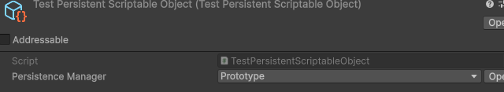

Core Concepts Must read
The model behind what you already did: the parts data flows through, and when to reach for more than the simple path.
The parts
Three pieces do the work:
- The persistent object: your data, a
PersistentScriptableObject. - The persistence manager: where and how that data is stored (the inspector dropdown).
- The serializer: how the data is turned into text to store, and back.
Around those, three operations (load, save and clear) move data between the object and its storage, mostly on their own.
The persistent object
Your data is a class inheriting PersistentScriptableObject, and its serialized
fields are your data. You read and write them through the object at runtime, exactly like a
normal ScriptableObject; those same fields are what gets saved and loaded.
[CreateAssetMenu(menuName = "Player Data")]
public class PlayerData : PersistentScriptableObject
{
public int gold;
public int level = 1;
}Whatever the fields hold outside play mode is the object's default values: the state a brand-new player starts with, and what the data falls back to when there is no save.
A persistent object is a single shared asset, so everything that references it reads and writes the same live data. When you want more (multiple save slots, save versioning, reacting to load and save) you opt in through one of the small optional interfaces.
The persistence manager
At the top of every persistent object's inspector is a Persistence Manager dropdown. The manager decides where and how the data is stored: a local file, Player Prefs, memory, a server. Pick one, or pick None to opt the object out of persistence entirely. The manager you pick is created automatically as a sub-asset of the persistent object, you never make or wire it yourself.

Because the manager is data on the asset and not in your scripts, you can switch managers at any time without changing a line of code. Its inspector has three sections:
- Parameters: the manager's settings, the serializer, whether it loads and saves automatically, how often, timeouts, and manager-specific options.
- Actions: the current slot, and buttons to Load, Save or Clear by hand while you play.
- Status: the object's live state (ready or not, the last operation's result), and a running log of every load, save and clear as it happens.
See Local Saving for the managers you can choose.

The serializer
Storage works in text, so the manager runs the object through a serializer to turn it into a string on save, and back into the object on load. The serializer is a field on the manager, so you choose it in the same inspector.
By default that is Unity JSON, which serializes your fields exactly the way Unity already does (the same rules as the inspector and prefabs), so it just works for typical data with no setup. The save it produces is plain, readable JSON when no compression or encryption is applied.
You rarely need to think about it, but it is a real extension point: swap in your own format
by writing a Serializer (see Extending).
Operations: load, save, clear
Three operations move data between the object and its storage. Most of the time you call none
of them. A manager is in scope while its object is loaded and active in the
running game, and leaves scope when the object is unloaded; by default it loads when it enters
scope (whenever Unity loads its object, which may be at launch or much later), retrying
automatically if that load fails (AutoLoadRetryDelay),
and saves at safe points (when the object is unloaded, when the
application loses focus or is paused, and on a regular timer).
This automatic behavior is what lets a basic setup need no save code, and you can tune or
disable it per manager (AutoLoad, AutoSave, AutoLoadRetryDelay, RegularSaveDelay).
Load
Reads the stored data back into the object. It happens automatically when the object enters
scope; call it yourself for a "load game" or "continue" flow. Not every manager can load synchronously: a
server manager has no synchronous load, so LoadSync() on it reports it could not
run rather than blocking. The manager's ReadExecutionMode declares what it
supports.
Save
Writes the object's current data to storage. It happens automatically at the safe points above; call it yourself at your own checkpoints.
Clear
The destructive one: it deletes the saved data, resets the object to its defaults, and pauses
saving until the next load, so the just-cleared state is never written back. To reset the
object in memory without deleting the save, use ResetToDefaults() instead; to
capture and restore an in-memory checkpoint, use Snapshot() /
Restore() (see Resetting & checkpoints).
Driving it yourself
Most projects never need this, the automatic behavior above is enough. When you do call an operation yourself, each of Load, Save and Clear comes in five shapes so it fits any calling style (shown here with Save):
- Fire and forget:
Save(). The default "don't think about it" call, kick it off and move on. It also drops straight onto a UI event, with no wrapper script. - Callback:
Save(result => ...). Runs your callback once the operation finishes, handing it the result. - Synchronous:
SaveSync(). Forces the operation to run inline and returns its final result, when the manager supports synchronous work. - Async:
await SaveAsync(). Await the result inside anasyncmethod. - Coroutine:
yield return SaveRoutine(). Yield it in a coroutine, then read itsResult.
PersistenceManager pm = playerData.PersistenceManager;
pm.Save(); // fire and forget
pm.Save(result => ShowSavedTick()); // callback when done
SaveResult sync = pm.SaveSync(); // forced synchronous, result inline
SaveResult res = await pm.SaveAsync(); // async
PersistenceOperation<SaveResult> op = pm.SaveRoutine(); // coroutine: create the handle,
yield return op; // yield return it,
SaveResult routine = op.Result; // then read its ResultResults
Every operation reports back a Result (LoadResult,
SaveResult or ClearResult). It carries a Type, and the
simplest way to read it is the intent-named flags:
IsSuccess: it worked.IsFailure: something genuinely went wrong (the storage was temporarily unavailable, or code threw). A retry might help.IsInvalid(load only): the storage held nothing usable, missing or corrupt. This is the normal first run, not an error: the object keeps its current values (its authored defaults on a fresh launch, or whatever the game set in the meantime) and saving is allowed.IsIgnored: the operation never ran and changed nothing (not dirty, blocked, no slot selected, not loaded yet, shutting down, superseded, among others).Messagesays why.IsCancelled: it started but was abandoned (timed out, superseded, or the manager left scope).IsBusy: a specialIsIgnoredcase, a synchronous call declined because async work (or a pending recovery) was already in flight. Retry once idle, or use the async path.
A result tells you how that one operation ended. To know whether the object is
currently holding its real data, read IsReady, covered next.
When the data is ready
Once a manager has loaded, its object holds real data and is safe to read and modify. You can
check that moment with IsReady, but how much you actually need it depends on your
persistence manager.
- With a synchronous manager that always succeeds instantly (Player Prefs, Prototype on a normal device), the automatic load finishes before your game code runs, so the data is effectively always ready. You rarely check.
- It earns its keep when a load can genuinely fail or take time: an asynchronous manager (a server, Cloud Save), or any case where you must be certain the real save loaded and cannot simply proceed on default values.
IsReady is true once the object holds its data and is safe to read
and save. It is false before the first load completes, during a slot change,
after a clear until the next load, and after a load that failed (so a save never
overwrites data a retry might still recover). Changing the active slot is itself a scope exit
and re-entry, so it triggers a fresh load and IsReady stays false until that load
lands.
if (playerData.PersistenceManager.IsReady)
playerData.gold += 100;
To wait for readiness rather than poll, await WhenReady (it works with both
await and yield return). It completes once the current readiness flow
has settled, then you read IsReady for the outcome:
await playerData.PersistenceManager.WhenReady;
if (playerData.PersistenceManager.IsReady)
StartGame(playerData);Editor vs play mode
In the editor, when you stop playing, your persistent objects are restored to the default values you authored on the asset, not the runtime values from the play session.
This is deliberate. A ScriptableObject normally keeps runtime edits written into the asset in the editor (a well-known Unity quirk that does not happen in a build). Persistent Asset undoes that for you, so the defaults you set on the asset stay exactly as authored and version control does not fill with play-session noise. The save itself still exists on disk and still loads on the next launch, in the editor and in a build alike.
Acting on everything at once
Most code talks to one object's manager through
yourObject.PersistenceManager. When you want to act on every active manager
together (a global save on quit, a "new game" wipe), the static Persistence class
mirrors the same operations across all of them:
// Save every active manager at once
Persistence.SaveAll();
// Wait for every manager's load to settle
await Persistence.WhenAllReady;
Persistence also exposes global events (such as OnAfterAnySave and
ManagerAdded) for cross-cutting concerns like a "saving..." indicator.
And for the objects you marked always-global (a settings
singleton, a slot registry), the static GlobalPersistedData class reaches them
from anywhere by type, with no serialized reference, through
GlobalPersistedData.Find<GameSettings>().